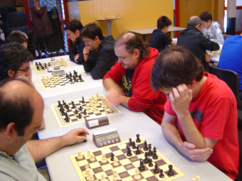
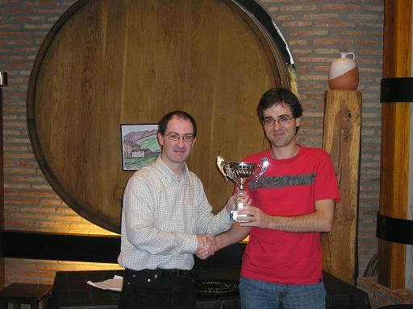

Pinchetas en Tolosa 2012
24-6-2012
De nuevo nos han invitado este año
a
jugar pinchetas en Tolosa con motivo de las fiestas patronales de San
Juan. Este año el número de equipos ha sido de 10 con lo que el
torneo ha consistido en un todos-contra-todos a una vuelta. Para
defender nuestro club hasta allí se desplazaron Iosu, Félix, Tinin
y Aritz, por ese orden y como siempre el máximo rival era el club de
Fomento.

En la ronda que iba a ser la decisiva frente a Fomento.
La competición fue más o menos
igualada hasta el enfrentamiento particular, en el que pasó de todo
(incluso que Iosu no diese un mate en 1 en el medio juego con mucho
tiempo en el reloj por hacer una captura automática), y se perdió
inapelablemente por 3,5-0,5, con lo que el torneo quedó decidido. Al
final segundos, eso sí luego en la comida como los mejores.

Iosu recibiendo el trofeo de
manos de Ramon Etxeberria.
Más información de la web del club de Tolosa http://www.euskalnet.net/tict/SanJoanSaria/2012/index.html
Más fotos en
http://www.flickr.com//photos/25221600@N04/sets/72157630262122884/show/
|